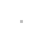

This is an ART project to teach you how to contribute and make use of an opportunity to use art and engineering to create a master piece.
Anyone who wished to learn how to create a pull request for a project on GitHub can use this project to contribute 1 or maximum 2 tile on the canvas.
 


In order to contribute a tile to the canvas you'll have to create a pull request. please check the Contributing guide
The goal of this project is to complete the canvas in highly respectful and fun manner.
MIT